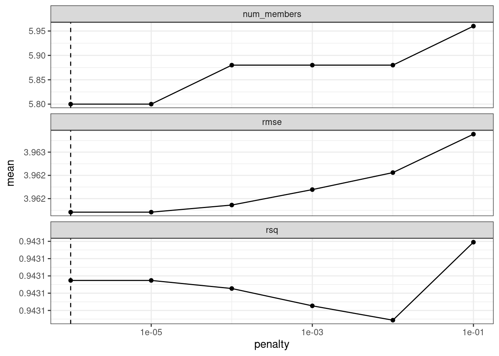
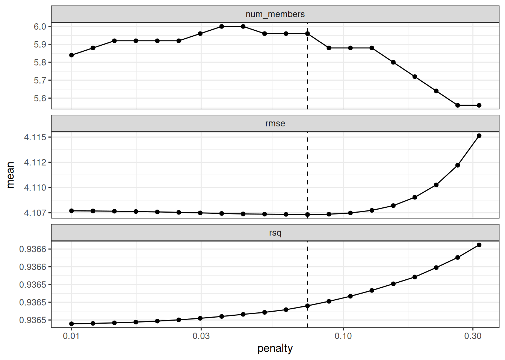
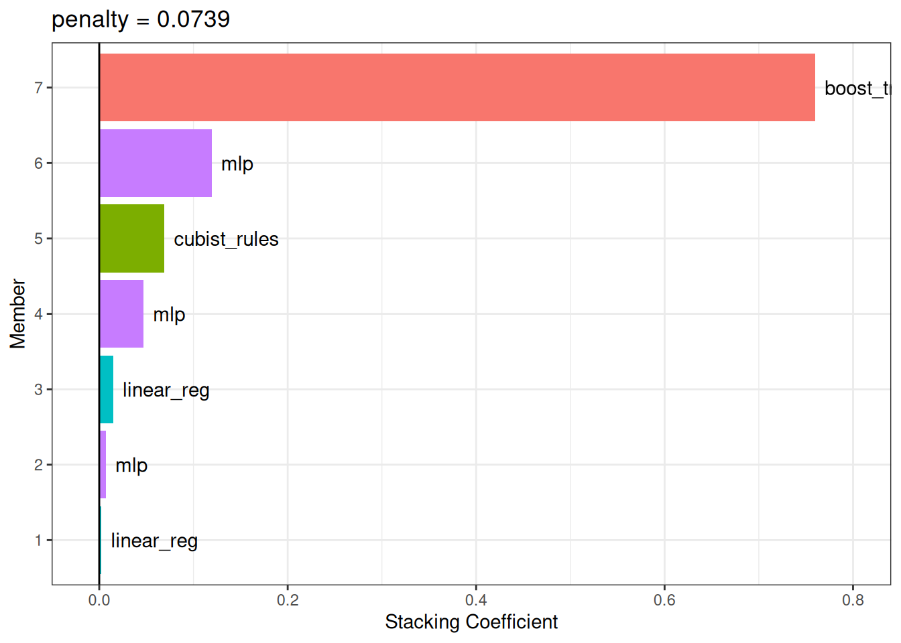

race_results
## # A workflow set/tibble: 12 × 4
## wflow_id info option result
## <chr> <list> <list> <list>
## 1 MARS <tibble [1 × 4]> <opts[3]> <race[+]>
## 2 CART <tibble [1 × 4]> <opts[3]> <race[+]>
## 3 CART_bagged <tibble [1 × 4]> <opts[3]> <rsmp[+]>
## 4 RF <tibble [1 × 4]> <opts[3]> <race[+]>
## 5 boosting <tibble [1 × 4]> <opts[3]> <race[+]>
## 6 Cubist <tibble [1 × 4]> <opts[3]> <race[+]>
## # ℹ 6 more rows20 Conjuntos De Modelos
Un conjunto de modelos, donde las predicciones de varios alumnos individuales se agregan para hacer una predicción, puede producir un modelo final de alto rendimiento. Los métodos más populares para crear modelos de conjunto son el ensacado (Breiman 1996a), el bosque aleatorio (Ho 1995; Breiman 2001) e impulsar (Freund y Schapire 1997). Cada uno de estos métodos combina las predicciones de múltiples versiones del mismo tipo de modelo (por ejemplo, árboles de clasificación). Sin embargo, uno de los primeros métodos para crear conjuntos es apilamiento de modelos (Wolpert 1992; Breiman 1996b).
El apilamiento de modelos combina las predicciones de múltiples modelos de cualquier tipo. Por ejemplo, en un conjunto de apilamiento se pueden incluir una regresión logística, un árbol de clasificación y una máquina de vectores de soporte.
Este capítulo muestra cómo apilar modelos predictivos usando el paquete stacks. Reutilizaremos los resultados del Capítulo 15 donde se evaluaron múltiples modelos para predecir la resistencia a la compresión de las mezclas de concreto.
El proceso de construcción de un conjunto apilado es:
- Ensamble el conjunto de entrenamiento de predicciones de reserva (producidas mediante remuestreo).
- Cree un modelo para combinar estas predicciones.
- Para cada miembro del conjunto, ajuste el modelo en el conjunto de entrenamiento original.
En secciones siguientes, describiremos este proceso. Sin embargo, antes de continuar, aclararemos algunas nomenclaturas para las variaciones de lo que puede significar “el modelo”. ¡Esto puede convertirse rápidamente en un término sobrecargado cuando trabajamos en un análisis de modelado complejo! Consideremos el modelo de perceptrón multicapa (MLP) (también conocido como red neuronal) creado en el Capítulo 15.
En general, hablaremos de un modelo MLP como el tipo de modelo. Otros tipos de modelos son las máquinas de regresión lineal y de vectores de soporte.
Los parámetros de ajuste son un aspecto importante de un modelo. En el Capítulo 15, el modelo MLP se ajustó en más de 25 valores de parámetros de ajuste. En los capítulos anteriores, hemos llamado a estos valores de parámetros de ajuste candidatos o configuraciones de modelo. En la literatura sobre ensamblaje, estos también se denominan modelos base.
Usaremos el término miembros candidatos para describir las posibles configuraciones del modelo (de todos los tipos de modelos) que podrían incluirse en el conjunto de apilamiento.
Esto significa que un modelo de apilamiento puede incluir diferentes tipos de modelos (por ejemplo, árboles y redes neuronales), así como diferentes configuraciones del mismo modelo (por ejemplo, árboles con diferentes profundidades).
20.1 Crear El Conjunto De Entrenamiento Para Apilar
El primer paso para construir un conjunto apilado se basa en las predicciones del conjunto de evaluación a partir de un esquema de remuestreo con múltiples divisiones. Para cada punto de datos en el conjunto de entrenamiento, el apilamiento requiere algún tipo de predicción fuera de la muestra. Para los modelos de regresión, este es el resultado previsto. Para los modelos de clasificación, las clases o probabilidades predichas están disponibles para su uso, aunque estas últimas contienen más información que las predicciones de clases estrictas. Para un conjunto de modelos, se ensambla un conjunto de datos donde las filas son las muestras del conjunto de entrenamiento y las columnas son las predicciones fuera de la muestra del conjunto de múltiples modelos.
En el Capítulo 15, utilizamos cinco repeticiones de validación cruzada 10 veces para volver a muestrear los datos. Este esquema de remuestreo genera cinco predicciones de conjuntos de evaluación para cada muestra de conjunto de entrenamiento. Pueden ocurrir múltiples predicciones fuera de la muestra en varias otras técnicas de remuestreo (por ejemplo, arranque). A los efectos del apilamiento, cualquier predicción replicada para un punto de datos en el conjunto de entrenamiento se promedia de modo que haya una única predicción por muestra del conjunto de entrenamiento por miembro candidato.
También se pueden utilizar conjuntos de validación simples con el apilamiento, ya que tidymodels considera que se trata de un remuestreo único.
Para el ejemplo concreto, el conjunto de entrenamiento utilizado para el apilamiento de modelos tiene columnas para todos los resultados de los parámetros de ajuste candidatos. Tabla 20.1 presenta las primeras seis filas y columnas seleccionadas.
| Muestra # | Bagged Tree | MARS 1 | MARS 2 | Cubist 1 | ... | Cubist 25 | ... |
|---|---|---|---|---|---|---|---|
| 1 | 25.18 | 17.92 | 17.21 | 17.79 | 17.82 | ||
| 2 | 5.18 | -1.77 | -0.74 | 2.83 | 3.87 | ||
| 3 | 9.71 | 7.26 | 5.91 | 6.31 | 8.60 | ||
| 4 | 25.21 | 20.93 | 21.52 | 23.72 | 21.61 | ||
| 5 | 6.33 | 1.53 | 0.15 | 3.60 | 4.57 | ||
| 6 | 7.88 | 4.88 | 1.74 | 7.69 | 7.55 |
Hay una sola columna para el modelo de árbol en bolsas ya que no tiene parámetros de ajuste. Además, recuerde que MARS se sintonizó en función de un único parámetro (el grado del producto) con dos configuraciones posibles, por lo que este modelo está representado por dos columnas. La mayoría de los otros modelos tienen 25 columnas correspondientes, como se muestra para Cubist en este ejemplo.
Para los modelos de clasificación, las columnas de predicción candidatas serían probabilidades de clase predichas. Dado que estas columnas suman una para cada modelo, las probabilidades de una de las clases pueden omitirse.
Para resumir dónde nos encontramos hasta ahora, el primer paso para el apilamiento es ensamblar las predicciones del conjunto de evaluación para el conjunto de entrenamiento de cada modelo candidato. Podemos utilizar estas predicciones de conjuntos de evaluación para avanzar y construir un conjunto apilado.
Para comenzar a ensamblar con el paquete stacks, cree una pila de datos vacía usando la función stacks() y luego agregue modelos candidatos. Recuerde que utilizamos conjuntos de flujos de trabajo para ajustar una amplia variedad de modelos a estos datos. Usaremos los resultados de las carreras:
En este caso, nuestra sintaxis es:
library(tidymodels)
library(stacks)
tidymodels_prefer()
concrete_stack <-
stacks() %>%
add_candidates(race_results)
concrete_stack
## # A data stack with 12 model definitions and 22 candidate members:
## # MARS: 1 model configuration
## # CART: 1 model configuration
## # CART_bagged: 1 model configuration
## # RF: 1 model configuration
## # boosting: 1 model configuration
## # Cubist: 1 model configuration
## # SVM_radial: 1 model configuration
## # SVM_poly: 1 model configuration
## # KNN: 3 model configurations
## # neural_network: 5 model configurations
## # full_quad_linear_reg: 5 model configurations
## # full_quad_KNN: 1 model configuration
## # Outcome: compressive_strength (numeric)Recuerde que los métodos de carrera (Sección 13.5.5) son más eficientes ya que es posible que no evalúen todas las configuraciones en todos los remuestreos. El apilamiento requiere que todos los miembros candidatos tengan el conjunto completo de remuestras. add_candidates() incluye solo las configuraciones del modelo que tienen resultados completos.
¿Por qué utilizar los resultados de las carreras en lugar del conjunto completo de modelos candidatos contenidos en grid_results? Se puede utilizar cualquiera de los dos. Encontramos un mejor rendimiento para estos datos utilizando los resultados de las carreras. Esto podría deberse a que el método de carrera preselecciona los mejores modelos de la parrilla más grande.
Si no hubiéramos usado el paquete workflowsets, los objetos de tune y finetune también podrían pasarse a add_candidates(). Esto puede incluir objetos de búsqueda iterativos y de cuadrícula.
20.2 Combina Las Predicciones
Las predicciones del conjunto de entrenamiento y los datos de resultados observados correspondientes se utilizan para crear un modelo de metaaprendizaje donde las predicciones del conjunto de evaluación son los predictores de los datos de resultados observados. El metaaprendizaje se puede lograr utilizando cualquier modelo. El modelo más utilizado es un modelo lineal generalizado regularizado, que abarca modelos lineales, logísticos y multinomiales. Específicamente, la regularización mediante la penalización de lazo (Tibshirani 1996), que utiliza la contracción para atraer puntos hacia un valor central, tiene varias ventajas:
- El uso de la penalización de lazo puede eliminar candidatos (y, a veces, tipos de modelos completos) del conjunto.
- La correlación entre los candidatos a conjuntos tiende a ser muy alta y la regularización ayuda a aliviar este problema.
Breiman (1996b) también sugirió que, cuando se utiliza un modelo lineal para combinar las predicciones, podría ser útil restringir los coeficientes de combinación para que no sean negativos. En general, hemos encontrado que este es un buen consejo y es el valor predeterminado para el paquete stacks (pero se puede cambiar mediante un argumento opcional).
Dado que nuestro resultado es numérico, se utiliza la regresión lineal para el metamodelo. Ajustar el metamodelo es tan sencillo como usar:
set.seed(2001)
ens <- blend_predictions(concrete_stack)Esto evalúa el modelo de metaaprendizaje sobre una cuadrícula predefinida de valores de penalización de lazo y utiliza un método de remuestreo interno para determinar el mejor valor. El método autoplot(), que se muestra en Figura 20.1, nos ayuda a comprender si el método de penalización predeterminado fue suficiente:
autoplot(ens)

autoplot() en el objeto de pilas combinadas
El panel superior de Figura 20.1 muestra el número promedio de miembros candidatos del conjunto retenidos por el modelo de metaaprendizaje. Podemos ver que el número de miembros es bastante constante y, a medida que aumenta, el RMSE también aumenta.
Es posible que el rango predeterminado no nos haya servido bien aquí. Para evaluar el modelo de metaaprendizaje con penalizaciones mayores, pasemos una opción adicional:
set.seed(2002)
ens <- blend_predictions(concrete_stack, penalty = 10^seq(-2, -0.5, length = 20))Ahora, en Figura 20.2, vemos un rango en el que el modelo de conjunto se vuelve peor que con nuestra primera combinación (pero no mucho). Los valores de \(R^2\) aumentan con más miembros y sanciones mayores.
autoplot(ens)

autoplot() en el objeto de pilas combinadas actualizado
Al combinar predicciones utilizando un modelo de regresión, es común restringir los parámetros de combinación para que no sean negativos. Para estos datos, esta restricción tiene el efecto de eliminar muchos de los miembros potenciales del conjunto; Incluso con sanciones bastante bajas, el conjunto se limita a una fracción de los dieciocho originales.
El valor de penalización asociado con el RMSE más pequeño fue 0.074. Imprimir el objeto muestra los detalles del modelo de metaaprendizaje:
ens
## ── A stacked ensemble model ─────────────────────────────────────
##
##
## Out of 22 possible candidate members, the ensemble retained 7.
##
## Penalty: 0.0738619982207936.
##
## Mixture: 1.
##
##
## The 7 highest weighted members are:
## # A tibble: 7 × 3
## member type weight
## <chr> <chr> <dbl>
## 1 boosting_1_04 boost_tree 0.760
## 2 neural_network_1_12 mlp 0.119
## 3 Cubist_1_25 cubist_rules 0.0693
## 4 neural_network_1_04 mlp 0.0471
## 5 full_quad_linear_reg_1_16 linear_reg 0.0149
## 6 neural_network_1_17 mlp 0.00708
## # ℹ 1 more row
##
## Members have not yet been fitted with `fit_members()`.El modelo de metaaprendizaje de regresión lineal regularizado contenía coeficientes de combinación seven entre tipos de modelos four. El método autoplot() se puede utilizar nuevamente para mostrar las contribuciones de cada tipo de modelo, para producir Figura 20.3.

Los modelos boosted tree and neural network tienen las mayores contribuciones al conjunto. Para este conjunto, el resultado se predice con la ecuación:
\[\begin{align} \text{ensemble prediction} &=-0.69 \\ +&0.76 \times \text{boost tree prediction} \notag \\ +&0.1192 \times \text{mlp prediction (config 2)} \notag \\ +&0.069 \times \text{cubist rules prediction} \notag \\ +&0.0471 \times \text{mlp prediction (config 1)} \notag \\ +&0.0149 \times \text{linear reg prediction (config 1)} \notag \\ +&0.0071 \times \text{mlp prediction (config 3)} \notag \\ +&0.0024 \times \text{linear reg prediction (config 2)} \notag \end{align}\]
donde los predictores en la ecuación son los valores de resistencia a la compresión pronosticados a partir de esos modelos.
20.3 Ajustar Los Modelos Miembros
El conjunto contiene miembros candidatos seven y ahora sabemos cómo se pueden combinar sus predicciones en una predicción final para el conjunto. Sin embargo, estos ajustes de modelos individuales aún no se han creado. Para poder utilizar el modelo de apilamiento, se requieren ajustes de modelo adicionales seven. Estos utilizan todo el conjunto de entrenamiento con los predictores originales.
Los modelos seven a ajustar son:
boosting: number of trees = 1957, minimal node size = 8, tree depth = 7, learning rate = 0.0756, minimum loss reduction = 1.45e-07, and proportion of observations sampled = 0.679
Cubist: number of committees = 98 and number of nearest neighbors = 2
linear regression (quadratic features): amount of regularization = 6.28e-09 and proportion of lasso penalty = 0.636 (config 1)
linear regression (quadratic features): amount of regularization = 2e-09 and proportion of lasso penalty = 0.668 (config 2)
neural network: number of hidden units = 14, amount of regularization = 0.0345, and number of epochs = 979 (config 1)
neural network: number of hidden units = 22, amount of regularization = 2.08e-10, and number of epochs = 92 (config 2)
neural network: number of hidden units = 26, amount of regularization = 0.0149, and number of epochs = 203 (config 3)
El paquete stacks tiene una función, fit_members(), que entrena y devuelve estos modelos:
ens <- fit_members(ens)Esto actualiza el objeto de apilamiento con los objetos de flujo de trabajo ajustados para cada miembro. En este punto, el modelo de apilamiento se puede utilizar para la predicción.
20.4 Resultados Del Conjunto De Pruebas
Dado que el proceso de combinación utilizó remuestreo, podemos estimar que el conjunto con miembros seven tenía un RMSE estimado de 4.11. Recuerde del Capítulo 15 que el árbol mejor impulsado tenía un conjunto de prueba RMSE de 3.41. ¿Cómo se comparará el modelo de conjunto en el conjunto de prueba? Podemos usar predict() para averiguarlo:
Esto es moderadamente mejor que nuestro mejor modelo individual. Es bastante común que el apilamiento produzca beneficios incrementales en comparación con el mejor modelo individual.
20.5 Resumen Del Capítulo
Este capítulo demostró cómo combinar diferentes modelos en un conjunto para obtener un mejor rendimiento predictivo. El proceso de creación del conjunto puede eliminar automáticamente los modelos candidatos para encontrar un pequeño subconjunto que mejore el rendimiento. El paquete stacks tiene una interfaz fluida para combinar resultados de remuestreo y ajuste en un metamodelo.